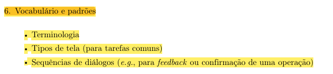

Vocabulário e padrões¶
Histórico de Versão e Contribuição¶
| Data | Versão | Descrição | Autor(es) | Revisor(es) |
|---|---|---|---|---|
| 05/10/2026 | 1.0 | Criação do documento de vocabulário e padrões do guia de estilo. | Arthur Mariani | Carlos Henrique |
1. Introdução¶
Esta seção padroniza a terminologia, os tipos de tela utilizados nas tarefas comuns e as sequências de diálogo do portal da SEMOB-DF.
As decisões aplicam as orientações do capítulo de:
- utilizar o idioma do usuário;
- evitar termos orientados ao sistema;
- manter a mesma terminologia;
- organizar diálogos com início, meio e fim;
- apresentar conteúdo conciso e relevante;
- fornecer feedback ao final das ações.
2. Terminologia¶
2.1 Vocabulário controlado¶
Tabela 1 - Vocabulário controlado do portal
| Conceito | Termo adotado | Termos que não devem ser alternados indiscriminadamente |
|---|---|---|
| Planejamento do deslocamento | Planejar viagem | Planejador, planejamento de rota, planejamento de deslocamento |
| Local inicial | Origem | Partida, localização inicial |
| Local pretendido | Destino | Chegada, localização final |
| Consulta da posição do veículo | Ver ônibus em tempo real | Rastreamento, georreferenciamento, telemetria |
| Estimativa de chegada | Chega em X min | ETA, horário fixo apresentado como garantia |
| Atualidade dos dados | Última atualização | Dados atuais, tempo real sem indicação temporal |
| Dúvidas recorrentes | Perguntas frequentes | FAQ-SEMOB, FAQ |
| Tema relacionado à LAI | Acesso à Informação (LAI) | LAI e Acesso à informação usados como serviços diferentes |
| Ação relacionada ao SIC | Pedir informação (SIC) | SIC, e-SIC e LAI usados como sinônimos |
| Conjunto de serviços e contatos | Atendimento e serviços | Ouvidoria utilizada como nome para serviços que não pertencem à Ouvidoria |
Fonte: Arthur Mariani, elaborado a partir das análises de tarefas, do brainstorming e das inspeções do projeto.
Os termos relacionados a Acesso à Informação (LAI), Pedir informação (SIC) e Atendimento e serviços já aparecem como recomendações na inspeção de consistência e padronização.
2.2 Siglas e termos técnicos¶
Siglas como STPC, PDTU, CTPC e STIP não devem aparecer sem explicação na primeira ocorrência.
Termos como linha circular, integração tarifária, validador, tabela e soltura foram identificados no projeto como potencialmente desconhecidos. Quando seu uso for necessário, devem ser acompanhados de explicação em linguagem familiar ao passageiro.
2.3 Instituições¶
Os nomes oficiais devem ser preservados quando for necessário informar responsabilidades:
- SEMOB-DF;
- BRB Mobilidade;
- Metrô-DF;
- operadoras de ônibus;
- Participa DF.
A interface deve explicar a função da instituição no contexto da tarefa, pois os usuários documentados no projeto não distinguem claramente as responsabilidades de cada órgão.
2.4 Terminologia ainda pendente¶
Os estados enviado, processado, disponível e pendente de atualização aparecem na TAR-07 como proposta para explicar o crédito de Vale-Transporte. Como essa tarefa ainda depende de validação, esses estados devem permanecer identificados como provisórios e não como terminologia definitiva.
3. Tipos de tela¶
3.1 Tela inicial¶
Deve priorizar as tarefas mais frequentes documentadas no projeto:
- planejar viagem;
- consultar linhas e horários;
- ver ônibus em tempo real;
- acessar atendimento.
A decisão é sustentada pelo brainstorming, no qual "menos informações na tela inicial" recebeu sete dos nove votos registrados.
3.2 Tela de busca de viagem¶
Deve permitir informar origem e destino e iniciar a busca de rotas.
3.3 Tela de resultados de rotas¶
Deve permitir comparar alternativas com tempo estimado, linha, tarifa, tipo da linha e integrações.
3.4 Tela de acompanhamento em tempo real¶
Deve reunir:
- posição do ônibus;
- tempo previsto de chegada;
- última atualização;
- alertas relacionados à linha.
3.5 Tela de alertas¶
Deve apresentar desvios, obras, retenções e alterações relacionados à linha consultada, sem misturá-los com notícias institucionais sem relação com a viagem.
3.6 Tela de pré-agendamento¶
Deve permitir selecionar o local e o dia do atendimento no Programa DF Acessível. Outros elementos dependem de documentação adicional.
3.7 Tela de atendimento¶
Deve apresentar o canal responsável, permitir o registro de manifestação e informar o protocolo quando disponível. A necessidade está documentada no brainstorming e nos resultados da análise.
3.8 Tela de erro e recuperação¶
Deve:
- informar o problema em linguagem simples;
- preservar os dados;
- apresentar uma ação de recuperação;
- permitir nova tentativa;
- evitar exigir conhecimento técnico.
3.9 Tela de redirecionamento¶
Deve explicar o destino, a instituição responsável e a razão do encaminhamento antes de abrir um serviço externo.
4. Sequências de diálogos¶
4.1 Planejar viagem¶
- Informar origem.
- Informar destino.
- Buscar rotas.
- Comparar alternativas.
- Selecionar a rota.
- Abrir o acompanhamento em tempo real.
- Consultar posição, previsão e alertas.
A sequência deriva diretamente da TAR-03.
4.2 Consultar ônibus em tempo real¶
- Buscar pelo número ou nome da linha ou por um ponto de referência.
- Selecionar a linha ou o ponto.
- Consultar a previsão de chegada.
- Verificar a posição no mapa.
- Avaliar a confiabilidade pela última atualização.
- Decidir entre ir ao ponto, esperar ou buscar alternativa.
- Opcionalmente, favoritar a linha ou ativar notificações.
A sequência deriva da TAR-06.
4.3 Pré-agendar atendimento no DF Acessível¶
- Iniciar o pré-agendamento.
- Escolher o local.
- Escolher o dia.
- Concluir a solicitação.
- Receber feedback de conclusão.
Somente local e dia estão documentados na TAR-02. Dados adicionais não devem ser incluídos até que estejam registrados no projeto.
4.4 Recuperar-se de uma falha¶
- O sistema detecta a falha.
- Informa o que aconteceu em linguagem simples.
- Preserva os dados e o contexto da tarefa.
- Apresenta a ação "Tentar novamente" ou outro caminho documentado.
- Informa o resultado da nova tentativa.
Essa sequência combina o projeto para erros do capítulo com as falhas documentadas no brainstorming e no Cenário 2.
4.5 Resolver indisponibilidade de crédito¶
A TAR-07 propõe a sequência:
- informar o problema;
- identificar os estados disponíveis;
- explicar a situação e o próximo passo;
- permitir que a usuária escolha a providência adequada.
Entretanto, essa sequência deve permanecer marcada como provisória, porque ainda não foi validada com usuárias, RH, SEMOB-DF e BRB Mobilidade.
5. Rastreabilidade das decisões¶
Tabela 2 - Relação entre as decisões, os princípios do capítulo e as evidências do projeto
| Decisão do guia | Fundamento do capítulo 10 | Evidência do projeto |
|---|---|---|
| Busca por origem e destino | Idioma do usuário, simplicidade e reconhecimento | TAR-03 e brainstorming |
| Tipos de tela baseados nas tarefas comuns | Vocabulário e padrões | Análises de tarefas |
| Indicação da última atualização | Visibilidade do estado do sistema | TAR-06 e resultados da análise |
| Mensagens de erro com recuperação | Projeto para erros | Brainstorming e Cenário 2 |
| Vocabulário controlado | Consistência terminológica | Inspeção de consistência |
| Explicação de siglas | Reconhecimento em vez de memorização | Inspeção de visibilidade |
| Explicação de redirecionamentos | Visibilidade dos efeitos das ações | Brainstorming e inspeções |
| Estados do crédito marcados como provisórios | Design rationale e validação das decisões | TAR-07 |
Fonte: Arthur Mariani, elaborado a partir dos artefatos do projeto e de Barbosa et al. (2021).
6. Declaração sobre o Uso de IA Generativa¶
Em cumprimento às normas de conduta acadêmica da SBC e ao Plano de Ensino da disciplina, declara-se que a Gemini, uma ferramenta de Inteligência Artificial Generativa, foi empregado para auxílio na estruturação textual, refinamento de clareza formal e formatação Markdown do presente documento. Toda a fundamentação teórica, o levantamento empírico de dados, as tomadas de decisão e as análises críticas permaneceram sob responsabilidade exclusiva dos integrantes da equipe.
Fotos de Referência¶

Imagem 1 - Vocabulários e Padrões. Fonte: Barbosa et al. (2021), p. 258.
Referências Bibliográficas¶
BARBOSA, S. D. J.; SILVA, B. S. da; SILVEIRA, M. S.; GASPARINI, I.; DARIN, T.; BARBOSA, G. D. J. Interação Humano-Computador e Experiência do Usuário. Autopublicação, 2021. ISBN 978-65-00-19677-1. Capítulo 10, p. 237-259.